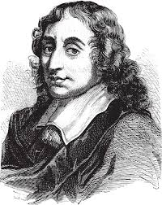
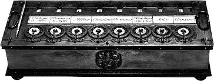
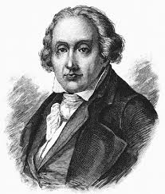
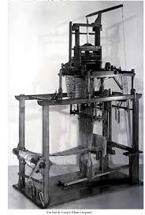
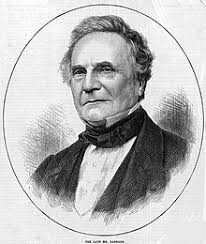
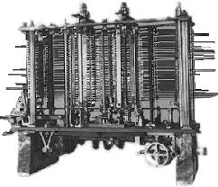
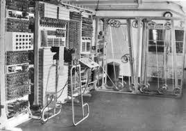

Uma Visão Cronológica dos Marcos da Computação
-
1642Blaise Pascal, filósofo, matemático, físico e inventor francês, foi um dos mais importantes pensadores da Era Moderna, tendo produzido uma complexa teoria filosófica. Ele nasceu em 19 de junho de 1623, na cidade de Clemont-Ferrand, na França. Filho do chefe fiscal Étienne Pascal, e de Antoinette Begon, junto a duas irmãs, Blaise se destacou desde cedo pela predisposição ao estudo de matemática, ciências naturais e pela formação escolástica. Pascal foi levado a desenvolver uma calculadora pelos trabalhosos cálculos aritméticos exigidos pelo trabalho de seu pai como supervisor de impostos em Ruão. Ele projetou a máquina para adicionar e subtrair dois números diretamente e realizar multiplicações e divisões através de repetidas adições ou subtrações,chamada Pascalina.
A Pascalina foi um marco na história da computação, sendo a primeira máquina a realizar cálculos complexos de forma automática. A calculadora de Pascal foi especialmente bem sucedida no projeto de seu mecanismo de transporte, que adiciona 1 a 9 em um mostrador e carrega 1 para o próximo mostrador quando o primeiro mostrador muda de 9 para 0. Sua inovação tornou cada dígito independente do estado do mostrador, permitindo que vários carregamentos passem rapidamente de um dígito para outro, independentemente da capacidade da máquina.
 -
1804Inventor francês, Joseph-Marie Jacquard, nascido a 7 de julho de 1752, em Lyon, e falecido a 7 de agosto de 1834 no mesmo local, desenvolveu o "Tear de Jacquard", que permitiu a um único operador tecer padrões complexos. O tear de Jacquard começou uma revolta tecnológica na indústria têxtil. Jacquard era filho de um tecelão. Quando seus pais morreram herdou o negócio da família e começou a tecer telas modeladas. Embora as telas modeladas fossem vendidas a preços elevados, as longas horas de trabalho requeridas para produzi-las eliminavam frequentemente todo o lucro. Em 1790 Jacquard começou a projetar um tear que tecesse padrões automaticamente. A revolução francesa (1789-1799) interrompeu os seus esforços, só tendo terminado a construção do tear em 1801.
Em 1804, Joseph Marie Jacquard construiu um tear inteiramente automatizado, que podia fazer desenhos muito complicados. Esse tear era programado por uma série de cartões perfurados, cada um deles controlando um único movimento da lançadeira. Essa tecnologia antecedeu os princípios de programação que seriam utilizados em computadores futuros.
 -
1837Charles Babbage foi um matemático e inventor britânico que é considerado o “pai do computador”. Ele é conhecido por ter projetado uma máquina analítica, uma precursora do computador moderno, em meados do século XIX. Nascido em Londres, Babbage estudou matemática na Universidade de Cambridge e logo se interessou pelas possibilidades de cálculo mecânico. Ele começou a trabalhar em um dispositivo de cálculo automático em 1822, chamado de “Máquina Diferencial”, que era capaz de calcular tabelas matemáticas complexas.
A máquina analítica, também conhecido como engenho analítico foi proposto pelo professor de matemática e pioneiro da ciência da computação Charles Babbage. A maquina foi descrita pela primeira vez em 1837, como a sucessora da Maquina Diferencial. Ela incorporava uma unidade lógica aritmética, fluxo de controle na forma de ramificações condicionais, loops e memória integrada, tornando-o o primeiro projeto para um computador de uso geral que poderia ser descrito em termos modernos como Turing-completo. Embora nunca tenha sido construída em sua versão completa, a Máquina Analítica de Charles Babbage, projetada em 1837, é considerada o primeiro computador conceitual. Essa máquina visionária incorporava os princípios de processamento de dados, memória e programação que seriam utilizados em computadores modernos.
 -
1943O Colossus, o primeiro computador eletrônico digital.
Primeiro computador inteiramente eletrónico, projetado e construído em 1943 nos Post Office Research Laboratories, em Dollis Hill, Londres, Inglaterra. Encomendado pelos serviços secretos britânicos durante a Segunda Guerra Mundial, o computador foi construído por uma equipa liderada pelo Dr. Tommy Flowers, para facilitar a descodificação de códigos militares secretos alemães. O Colossus foi o equivalente britânico ao Harvard MK I americano, com finalidades comuns, mas que combinava elementos mecânicos e elétricos na sua conceção. Foi construída uma série de 10 computadores Colossus, que permitiram aos ingleses uma mais rápida e eficiente descodificação de mensagens intercetadas ao inimigo alemão.
 -
1946O Integrador e Computador Numérico Eletrônico (ENIAC) Desenvolvido a pedido do exército dos Estados Unidos para seu laboratório de pesquisa balística, o ENIAC era um monstrengo de 30 toneladas de peso que ocupava uma área de 180 m² de área construída. Sua produção custou nada menos do que US$ 500 mil na época, o que hoje representaria aproximadamente US$ 6 milhões e a máquina contava com um hardware equipado com 70 mil resístores e 18 mil válvulas de vácuo que em funcionamento consumiam vorazmente 200 mil watts de energia.
Seu “sistema operacional” eram cartões perfurado operados por um time de funcionárias do exército — o que de quebra as classifica como as primeiras programadoras que se tem notícia. Sua construção de iniciou em plena guerra, em 1943. Apesar mostrado em 1946, só foi ser ligado pela primeira vez em julho de 47. Apesar de ter uma capacidade de operação menor do que qualquer calculadora de mão moderna, durante seus 10 anos de operação o ENIAC “realizou mais contas do que toda humanidade já havia feito em sua história”.
-
1950sA era dos computadores de válvulas termiônicas, caracterizada por seu grande tamanho e poder de processo